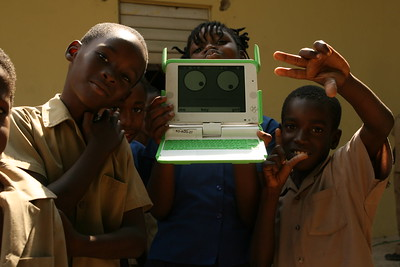

Frequently Asked Questions
What is the XO laptop?
The XO laptop is a Linux-based computer with two modes of display. One mode is color transmissive and the other is black and white, refletive, and allows for readability under sunlight. The laptop can have up to a 1.2 GHz processor and features 2 USB ports and an SD card slot. The laptop can also connect to other nearby laptops and form a network. It is also highly power-efficient, enabling the use of solar, wind or water power systems.
Why give a laptop to a child who may have no running water or electricity?
If we change the word "laptop" with "education", we get a clearer picture of the purpose behind the mission. Education does not generally stop until all other aspects of someones life, such as food, water, and shelter are solved. All of these issues must be solved at the same time, because education is the foundation of the solutions. That is why the XO is designed to work in places it is most needed, with features such as durability, power efficiency, and enhanced connectivity.
Why not a desktop computer, or a recycled desktop machine?
While desktops are cheaper than laptops, laptops provide more mobility. Mobility is important for a child who is taking the laptop back to their home. Bringing the laptop to their homes also engages the family of the child, who may also use the laptop. Regarding the use of recycled machines; the amount of time required to refurbish these machines makes recycling them for the purpose of this mission not viable. However, recycling is still encouraged for other reasons.
What about connectivity? Aren’t telecommunications services expensive in the developing world?
The XO laptops can connect to each other and form a network. Each deployment also works on connecting them directly to the internet. One point of access to the internet can be shared among other XO laptop users. This allows children to share projects and ideas.